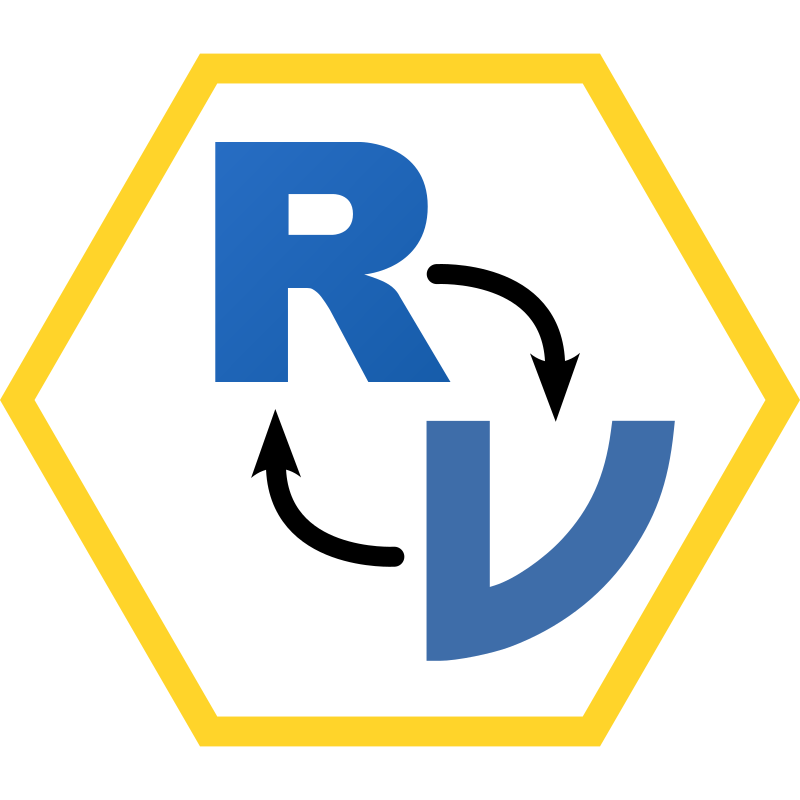

jmvReadWrite 
The R-package jmvReadWrite reads and writes the .omv-files that are used by the statistical spreadsheet jamovi (https://www.jamovi.org). It is supposed to ease using syntax for statistical analyses created using the GUI in jamovi in connection with the R-library jmv.
Installation
You can either install a stable version of jmvReadWrite which is available on CRAN using the following command:
install.packages("jmvReadWrite")or you can install the development version of the jmvReadWrite package from GitHub:
if (!require(devtools)) install.packages("devtools")
devtools::install_github("sjentsch/jmvReadWrite")How to use the package?
The following code uses the ToothGrowth-data set that is part of the data sets included in R (the current file contains some modifications though for testing the reading and writing routines: read_omv and write_omv). With this data set, a syntax to conduct an ANOVA is run.
The results should be similar to those obtained when running the same analysis in jamovi (using the GUI). To do so, open the file menu (☰) choose Open, Data Library and ToothGrowth. Afterwards, click on the ANOVA-button in the Analyses-tab and choose ANOVA. There, you assign the variable len to Dependent Variable and supp and dose to Fixed Factors. Afterwards, you choose / tick Overall Model Test and ω². Open the drop-down menu Assumption Checks and tick Homogeneity test and Normality test. The results should be identical apart from that the table output looks nicer in jamovi (not only text, as below), numbers are rounded and maybe one or two other cosmetic differences.
If you want to copy the syntax generated in jamovi, you have to switch on the Syntax Mode. Afterwards, the syntax is shown at the top of the analysis and can be copied from there.
library(jmvReadWrite)
library(jmv)
fleOMV <- system.file("extdata", "ToothGrowth.omv", package = "jmvReadWrite")
data <- read_omv(fleOMV)
# if the "jmv"-package is installed, we can run a test analysis with the data
if ("jmv" %in% rownames(installed.packages())) {
jmv::ANOVA(
formula = len ~ supp + dose + supp:dose,
data = data,
effectSize = c("omega"),
modelTest = TRUE,
homo = TRUE,
norm = TRUE)
}
#>
#> ANOVA
#>
#> ANOVA - len
#> ────────────────────────────────────────────────────────────────────────────────────────────────
#> Sum of Squares df Mean Square F p ω²
#> ────────────────────────────────────────────────────────────────────────────────────────────────
#> Overall model 2740.1033 5 548.02067 41.557178 < .0000001
#> supp 205.3500 1 205.35000 15.571979 0.0002312 0.0554519
#> dose 2426.4343 2 1213.21717 91.999965 < .0000001 0.6925788
#> supp:dose 108.3190 2 54.15950 4.106991 0.0218603 0.0236466
#> Residuals 712.1060 54 13.18715
#> ────────────────────────────────────────────────────────────────────────────────────────────────
#>
#>
#> ASSUMPTION CHECKS
#>
#> Homogeneity of Variances Test (Levene's)
#> ────────────────────────────────────────
#> F df1 df2 p
#> ────────────────────────────────────────
#> 1.940130 5 54 0.1027298
#> ────────────────────────────────────────
#>
#>
#> Normality Test (Shapiro-Wilk)
#> ─────────────────────────────
#> Statistic p
#> ─────────────────────────────
#> 0.9849884 0.6694242
#> ─────────────────────────────Since version 0.2.0, read_omv also extracts the syntax from analyses that you may have conducted in the jamovi-GUI and that are stored in the .omv-file. To extract them, you have to set the parameter getSyn = TRUE when calling read_omv (default is FALSE). When the parameter is set, the analyses are stored in the attribute syntax. They can be used as shown in the following examples:
library(jmvReadWrite)
fleOMV <- system.file("extdata", "ToothGrowth.omv", package = "jmvReadWrite")
data <- read_omv(fleOMV, getSyn = TRUE)
# shows the syntax of the analyses from the .omv-file
# please note that syntax extraction may not work on all systems
# if the syntax couldn't be extracted, an empty list (length = 0) is returned,
# otherwise, the syntax of the analyses from the .omv-file is shown and
# the commands of the first and the second analysis are run, with the
# output of the second analysis assigned to the variable result2
if (length(attr(data, "syntax")) >= 2) {
attr(data, "syntax")
# if the "jmv"-package is installed, we can run the analyses in "syntax"
if ("jmv" %in% rownames(installed.packages())) {
eval(parse(text = attr(data, "syntax")[[1]]))
eval(parse(text = paste0("result2 = ", attr(data, "syntax")[[2]])))
names(result2)
# -> "main" "assump" "contrasts" "postHoc" "emm"
# (the names of the five output tables)
}
}
#> [1] "main" "assump" "contrasts" "postHoc" "emm" "residsOV"The jmvReadWrite-package also enables you to write .omv-files in order to use them in jamovi. Let’s assume that you have a large collection of log-files (e.g., from an experiment) that you compile and process (summarize, filter, etc.) in R in order to later analyse them in jamovi. You will have those processed log-files stored in a data frame (called, e.g., data) which you then write to a file that you can open in jamovi afterwards.
library(jmvReadWrite)
# use the data set "ToothGrowth" and, if it exists, write it as jamovi-file
# using write_omv()
data("ToothGrowth")
# "retDbg" has to be set in order to return debug information to wrtDta
wrtDta <- write_omv(ToothGrowth, "Trial.omv", retDbg = TRUE)
names(wrtDta)
#> [1] "mtaDta" "xtdDta" "dtaFrm"
# -> "mtaDta" "xtdDta" "dtaFrm"
# this debug information contains a list with the metadata ("mtaDta", e.g.,
# column and data type), the extended data ("xtdDta", e.g., variable lables),
# and the data frame (dtaFrm) for checking (understanding the file format) and
# debugging
# check whether the file was written to the disk, get the file information (size, etc.)
# and delete the file afterwards
list.files(".", "Trial.omv")
#> [1] "Trial.omv"
file.info("Trial.omv")
#> size isdir mode mtime ctime
#> Trial.omv 1564 FALSE 664 2023-05-27 17:09:45 2023-05-27 17:09:45
#> atime uid gid uname grname
#> Trial.omv 2023-05-27 17:09:45 1000 1000 sjentsch sjentsch
unlink("Trial.omv")Although jamovi reads R-data files (.RData, .rda, .rds) write_omv permits to store jamovi-specific attributes (such as variable labels) in addition. Please note that if you are reading from an .omv-file in order to write back to an .omv-file (perhaps after some modifications), it is recommended to leave the sveAtt-attribute set to TRUE (which is the default).
# reading and writing a file with the "sveAtt"-parameter permits you to keep
# essential meta-data to ensure that the written file looks and works like the
# original file (plus you modifications)
fleOMV <- system.file("extdata", "ToothGrowth.omv", package = "jmvReadWrite")
data <- read_omv(fleOMV, sveAtt = TRUE)
# shows the names of the attributes for the whole data set (e.g., number of
# rows and columns) and the names of the attributes of the first column
names(attributes(data))
#> [1] "names" "row.names" "class" "fltLst" "removedRows"
#> [6] "addedRows" "transforms"
names(attributes(data[[1]]))
#> [1] "missingValues" "name" "id" "columnType"
#> [5] "dataType" "measureType" "formula" "formulaMessage"
#> [9] "parentId" "width" "type" "importName"
#> [13] "description" "transform" "edits" "filterNo"
#> [17] "active"
#
# perhaps do some modifications to the file here and write it back afterwards
write_omv(data, "Trial.omv")
unlink("Trial.omv")If Trial.omv in the example above would have been kept, it should look like the original file (plus your possible modifications). If you, e.g., added a new column, you could adjust some attributes (e.g., to enforce a specific columnType or measurementType): just look at how attributes are stored for other columns.
Helper functions
Since version 0.3.0, jmvReadWrite contains a number of helper functions that support you with commonly required data management tasks:
convert_to_omv: Converts data sets from other file formats into jamovi-format (this function may be helpful if you have to convert a larger amount of files).long2wide_omv: Convert a data set from long to wide format (time points for repeated measurements are arranged as rows in the original and converted into columns).wide2long_omv: Convert a data set from wide to long format (time points for repeated measurements are arranged as columns in the original and converted into rows).merge_cols_omv: Add cases from several data sets (i.e., the cases / rows in the second, etc. data set are added as rows to the first data set).merge_rows_omv: Add variables from several data sets (i.e., the variables / columns in the second, etc. input data set are added as columns to the first data set).sort_omv: Sort a data set according to one or more variable(s).